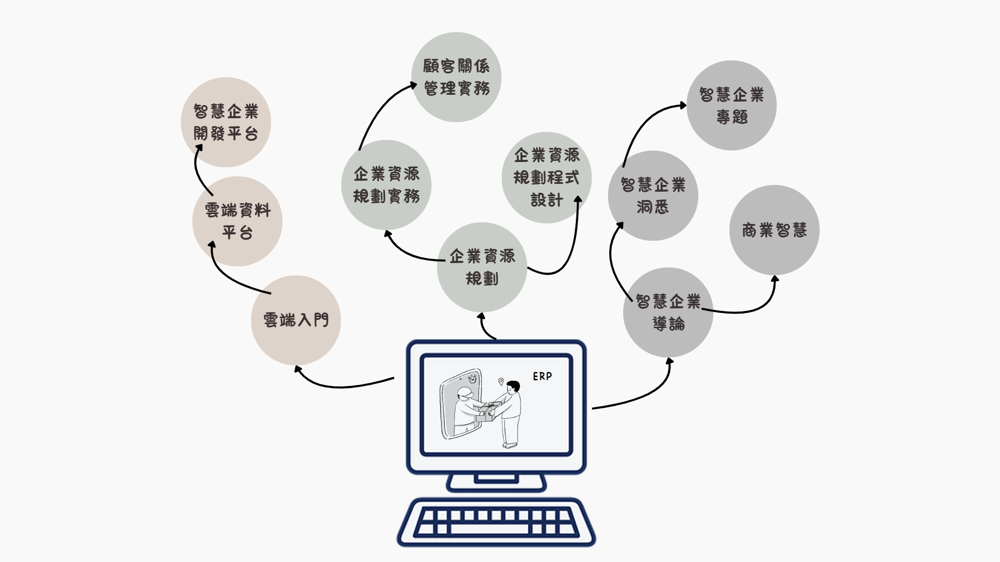

課程介紹
根據世新大學ERP實驗室的調查，台灣中大型企業超過99.9%都已導入企業資源規劃（ERP）系統。可見，ERP在企業裡是必備的系統。ERP利用資訊科技，協助企業解決生產、銷售、人力、發展、財務等日常營運的問題。
世新大學資管系非常重視ERP的教學，從大學部到研究所，規劃了一系列的課程，幫助同學從觀念、操作、理論、導入、客製化到實習，循序漸進地學習ERP。期望同學畢業後可以立刻與產業接軌，並培養出企業所需的人才。
世新資管系的ERP教學使用微軟的Dynamics 365 Business Central。畢業的同學除了到微軟的顧問公司工作以外，也有許多人到SAP、Oracle、鼎新等其他ERP公司工作。更多的同學更是投入不同的行業，擔任與ERP相關的工作。其出路包括ERP顧問、ERP工程師、ERP程式設計師、會計人員、生產管理人員等。
課程架構

領航員
- 陳育亮 老師:
- 劉立民 老師:
- 林宏遠 老師:
- 郭展盛 老師:
- 范修維 老師:
- 方孝華 老師:
- 許素華 老師:
智慧企業、企業資源規劃、無障礙網頁、影像處理
指紋影像處理分析、機器學習、深度學習、自然語言處理、知識表示與推論
元宇宙新經濟與商模創新、 數位轉型與創業、金融科技 應用、數位行銷、數位匯流、資安管理
資訊管理、企業資源規劃、電子商務、大數據資料探勘、行動資訊系統開發、行動學習、人工智慧應用
網路管理、資訊安全、雲端服務
作業研究、模糊理論
管理學、經濟學、行銷管理、網路創新服務設計、產業電子化個案研究、策略管理、企業概論、全球產業分析